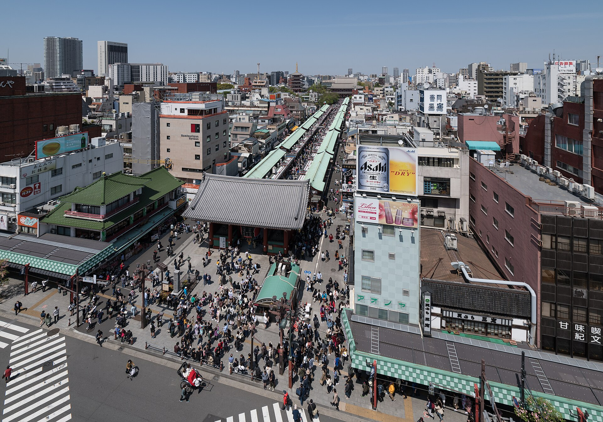
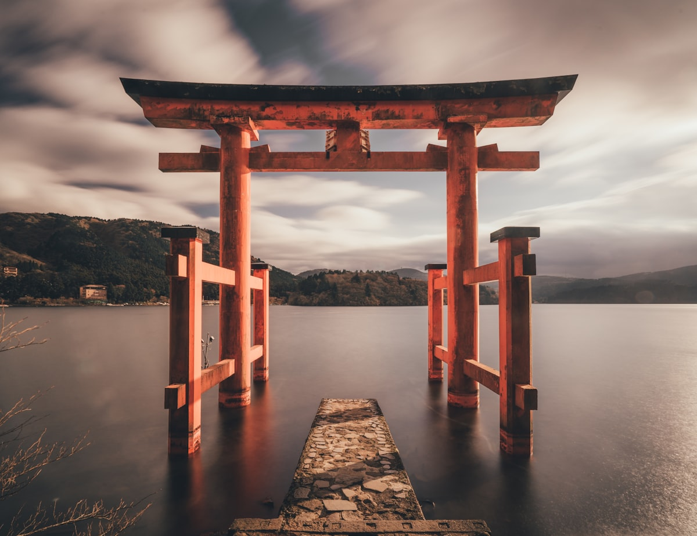

行 程
十天行程速览 10-Day Quick Glance
航 班
HK Express 香港快运 (订位代号：ICDEFN | 票种：Essential) HK Express Booking: ICDEFN (Essential)
| 行程Leg | 航班号Flight | 起飞与抵达Departure & Arrival | 舱等与备注Fare Class & Notes |
|---|---|---|---|
| 去程Outbound | UO769 | UO848 |
03 Oct (六) 01:00 槟城 (PEN) → 香港 (HKG) 转机 → 03 Oct (六) 14:45 抵达 成田 (NRT Terminal 2) |
舱等: Z | U 成田 T2 落地出关约 45-60 分钟 |
| 回程Inbound | UO629 | UO746 |
12 Oct (一) 02:20 羽田 (HND Terminal 3) → 香港 (HKG) 转机 → 12 Oct (一) 15:40 返抵 槟城 (PEN) |
舱等: W | Z 10/11 21:45 从浅草乘都营浅草线直达羽田 T3 |
宿 舍
3.1 东京基地：Yoin TOKYO in Asakusa (33号房) 3.1 Tokyo Base: Yoin TOKYO in Asakusa (Room 33)
建筑物名称：フォルテハイツ (Forte Heights) — 大楼门口挂的是这个名字，不是 LUXURY STAY HOTEL，给司机看这个地址即可
👉 盥洗备品齐全，洗发水沐浴乳吹风机都不用带。
② 入住前须提交身分证件：日本民泊法规定，须提供 2 人的姓名、住址、职业与护照资料页照片。只走 Airbnb 站内讯息传送，不要用 email。另请先确认两本护照效期涵盖 2026年10月 (建议 6 个月以上)。
3.2 河口湖住宿：SAWA Hotel（サワホテル）/ 東横INN (1晚) 3.2 Kawaguchiko: SAWA Hotel / Toyoko Inn
| 饭店Hotel | SAWA Hotel (首选推荐)SAWA Hotel | 東横INN 富士河口湖大橋 (备选)Toyoko Inn |
|---|---|---|
| 房型与价格 | Twin Room 21㎡（RM 308 / 税后 RM 332） | Twin Room 15㎡（约 RM 292 含早） |
| 空间与设施 | 21㎡ 宽敞大空间（大箱可平摊）、房内独立微波炉 | 15㎡ 紧凑标准化商务房（无微波炉） |
| 生活机能与自驾 | 步行 3 分钟到 Ogino 大超市、门口免费停车 | 步行 8 分钟到河口湖大桥、140位免费停车 |
交 通
4.1 交通卡与支付策略（已实测验证 ✅）4.1 Suica & Payment Strategy
| 成员Member | 方案Option | 取得/储值方式Method | 实测与体验Experience |
|---|---|---|---|
| 本人 (User) | iPhone 12 Apple Wallet Suica | Wise Digital Visa 储值 | 已实测成功开通 ✅ 快捷交通模式：手机无需亮屏解锁，碰闸机秒过 |
| 妈妈 (Mom) | Welcome Suica 红色实体卡 | 成田机场 T2 B1 现场现金购买 | 免押金、长辈 0 门槛；建议附挂绳伸缩卡套挂于随身小包防丢失 |
4.2 驻地交通特性：台东区竜泉4.2 Transit from Ryusen Base
| 车站Station | 步行距离Walk | 直达热门目的地Direct Destination |
|---|---|---|
| 三ノ轮站 (Minowa) | 6 分钟 | 日比谷线直达：上野 (4m)、秋叶原 (8m)、筑地 (18m)、银座 (20m)、六本木 (28m) |
| 入谷站 (Iriya) | 10 分钟 | 日比谷线 (⚠️ 无下行手扶梯，拖大行李建议走三ノ轮站) |
| 浅草站 (Asakusa) | 16 分钟 | 银座线 (起点站必有座去涩谷) · 都营浅草线 (直达羽田机场) |
门口巴士小抄：竜泉站牌（出门 1–2 分钟 · 均一价 ¥210）Bus Cheatsheet: Ryusen Stop (1-2 min walk, flat ¥210)
三条都营巴士线共用竜泉站牌，平地上下车、零楼梯，带长辈或拎大包时优先。同名站牌在国際通り两侧各一根——看巴士车头显示的行先（终点站）再上车。Three Toei routes share the Ryusen stop, step-free boarding. Check the destination sign on the bus front before boarding.
| 路线Route | 方向（车头行先）Direction | 用途与时间Use & Time |
|---|---|---|
| 草43 | 浅草雷門行 | 去浅草寺只有 3 站，约 10 分钟。逛本堂在「浅草公園六区」下车更近，拍雷门坐到底站 |
| 草63 | 浅草寿町行 | 同样去浅草（浅草公園六区／浅草雷門南下车），跟草43 二选一先到先坐 |
| 草63 | 池袋駅東口行（反方向） | 直达池袋 35–40 分（比地铁换乘省力）· 中途西日暮里可换 JR 山手线 |
| 都08 | 日暮里駅前行 | 换山手线首选：约 10 分钟到日暮里（山手线 + 京成 Skyliner + 常磐线） |
| 都08 | 錦糸町駅前行 | 直达押上（晴空塔）约 20 分钟，中途東武浅草駅 |
⚠️ 去浅草：草43＋草63 合并约 10 分钟一班（草43 约 30 分一班·末班 20:47；草63 约 10–15 分一班·末班 21:51），先来哪班坐哪班。都08 班距（已核对官方三种班表 · 日暮里駅前②番のりば）：平日 8–10 分、土曜 11–13 分、休日 11–15 分 — 周末不是 20–30 分一班，比想像密。始発 06:30、終発 22:04–22:18。晚归一律日比谷线。竜泉→三ノ轮站只有 1 站、步行 7 分钟即到，不值得坐巴士。To Asakusa, Kusa 43 + Kusa 63 combine to ~10 min headway (last 21:51). Toei 08 headway, checked against all three Toei timetables: 8-10 min weekdays, 11-13 min Saturdays, 11-15 min holidays. First 06:30, last 22:04-22:18. Take Hibiya Line late night.
日 程
Day 1 · 10月3日 (六) 14:45 落地成田 T2 · 入住安顿 · 晚间3大B PlanDay 1 · Oct 3 Land NRT 14:45 & Base Check-in
成田 T2 (14:45) → 空港第2ビル駅换票 → Skyliner (最快 16:02) → 上野 → 计程车至公寓 → 晚间3大B PlanNRT T2 14:45 Land → Skyliner → Taxi to Ryusen

- 快速入境：出示 Visit Japan Web 离线二维码与护照，预留 45–60 分钟过关与取大行李。
- 1F/B1 办卡提现：1F 或 B1 7-11 ATM 用 Wise 提日元现钞（选 JPY 无换汇）；B1 JR 红色机台为妈妈买 Welcome Suica 实体卡（现金充值 ¥3,000–5,000）。
- ⚠️ 专机极速出票：京成专用券売機按
Code Exchange扫官方 e-ticket QR（2人1码，一次选连号座位出 2 张实体磁票）。 - 🎁 线上票不锁班次不锁座：现场屏幕选最近班次（16:22 / 16:42 / 17:02）。
- 路线 A（首选公车 · ¥5,040）：Skyliner 坐到 日暮里站 (36分) → 东口电梯下站前 ② 番のりば搭 都08 巴士（5站/10分，¥210）直达「竜泉」站牌，下车走 2 分钟到公寓门下！
- 路线 B（备选打车 · ¥6,100）：Skyliner 坐到 京成上野站 (41分) → JR 正面口出租车排班处打车直达大楼门口（2.3km/8–10分/约 ¥1,400–1,600）。
- 京成アクセス特急直通浅草：空港第2ビル駅 → 浅草站 75 分直通，免特急券、Suica 直接刷，¥1,276/人 (IC)。再打车 1.8km 到公寓 ~¥1,100。2 人共约 ¥3,650，比 Skyliner 方案省 ¥2,350。
- 缺点：不划位，可能站 75 分钟。但 T2 是第 2 站 (T1 之后)，16 点台通常有位。浅草站 A18 有电梯。
- 决策点：15:45 出关后看京成 B1 券売機/柜台队伍，超过 10 人就改走 Plan B。
- 为什么不选京成本線特急：¥1,052/人虽最便宜，但 70-75 分只到京成上野，还要再打车 ¥1,400 — 比 Plan B 又慢又贵。
- 房间特点：输入智能锁入住，放好大行李，熟悉两张独立单人床与电梯环境。
- 生活周边：附近有 My Basket 超市(至23:00) 与 鸟贵族串烧(Minowa店)。
| Plan B 方案 | 适合场景与体验特色 | Google 评分与地图导航 |
|---|---|---|
| 方案 B1：浅草寺夜间点灯 | 幽静拍照首选，日落点灯至 23:00，几乎完全没有游客，计程车 5 分钟直达 | Google 4.6★ |
| 方案 B2：下町温泉钱汤 | 舒缓搭机疲劳首选，曙汤 (Akebono-yu) 或 寿汤 (Kotobuki-yu) 泡天然碳酸泉 (¥550/人) | Google 4.3★ |
| 方案 B3：上野不忍池夜景 | 感受夜间烟火气，不忍池湖畔漫步与阿美横町高架下海鲜屋台 | Google 4.3★ |

Day 2 · 10月4日 (日) 浅草清晨 ★ · 晴空塔 (全程徒步 / 3大B Plan)Day 2 · Oct 4 Early Asakusa & Skytree Scenic Walk
全程徒步: 公寓 (1.3km) → 浅草寺 (0.5km) → 隅田公园 (1.2km) → 晴空塔 (或选B Plan) · 🗺️ 全程一键导航 (10站)Flat Scenic Walk: Base → Sensoji → River Walk → Skytree
- 平地徒步：清晨沿着国际通平坦大道南行 16 分钟即达。
- 独享清静：07:00 前 雷门 (Kaminarimon)、本堂、五重塔几乎完全没人，拍照光线极佳。
- 本堂开放：浅草寺本堂 (06:30开门, Google 4.6★)。
- 老街小吃 (09:00陆续开门)：漫步 仲见世商店街 (Google 4.3★)，品尝人形烧、现烤仙贝与抹茶冰淇淋。
- 巨型菠萝面包：朝圣浅草超人气名店 浅草花月堂 本店 (09:00开门, Google 4.4★)，外皮酥脆内里松软。
- 人力车体验 (10:00 · 可选·推荐给妈妈)：雷门前上车，30分钟约 ¥9,000–13,000/两人，车夫会用手机帮两人在各机位拍合照——解决「谁帮我们俩拍照」的难题。车夫约 09:30 开始营业。
- 浅草文化观光中心 8F 免费展望台 (10:40)：雷门正对面的 浅草文化观光中心 (8F 展望台 09:00–22:00 · 免费)——电梯直达、有厕所，妈妈中场休息 + 俯拍仲见世商店街全景与晴空塔。
- 午餐名店精选 (11:00)：建议享用百年老店尾张屋热荞麦面或大黑家海老天丼。
- 待乳山圣天 (12:30 · 绕行5分钟)：隅田公园北侧的 待乳山圣天 (本堂 06:00–16:30)——供白萝卜祈愿的下町小寺，游客极少，还有可坐 4 人的迷你缆车，下坡能眺望晴空塔。
- 今户神社 (13:00)：今户神社 (授与所约 09:00–16:00)——招财猫发源地，粉色系成对招财猫与圆形绘马，¥300 小招财猫御守是好伴手礼。
- SUMIDA RIVER WALK 铁桥水上步道 (07:00–22:00 免费)：踏上依附于东武铁桥旁的 SUMIDA RIVER WALK (Google 4.3★) 跨越隅田川。步道设有透明玻璃视窗 (覗き窓) 可直视脚下水流与游船，身边不时有东武新型特急 Spacia X 列车驶过，是拍摄晴空塔无遮挡全景的绝佳机位！
- Tokyo Mizumachi 高架绿荫水町：过桥直达河畔复合街区 Tokyo Mizumachi (Google 4.1★)，途经人手一份的 Bread, Espresso & (Google 4.1★) 吐司咖啡馆与日式选物店，平坦绿荫大道直通晴空塔。
- 晴空塔展望台 (可选登塔)：登临 350m 天望甲板与 450m 天望回廊的 东京晴空塔 (Google 4.5★) 俯瞰关东平原与夕阳景致。
- Solamachi 只借设施不逛街：Tokyo Solamachi 当补给站用——冷气、厕所、坐下吃个抹茶甜点即走，不安排购物。
- 15:30 都08巴士回家午休：押上上车一班车回竜泉家门口（约20分钟 · ¥210），把体力留给晚上；状态好的话 19:30 再散步去看夜晚浅草寺（点灯至23:00）。
- 丰盛晚餐推荐：在商场 6F 美食街享用正宗仙台炭烤厚切牛舌。
| Plan B 方案 | 适合场景与体验特色 | Google 评分与地图导航 |
|---|---|---|
| 方案 B1：teamLab Planets TOKYO | 室内水上光影展，裸足涉水、浮空兰花与水晶宇宙，雨天或避暑沉浸式首选 | Google 4.7★ (丰洲) |
| 方案 B2：隅田川观光水上巴士 | 浅草码头搭乘未来感玻璃船舱观光船 (HIMIKO/HOTALUNA) 直达台场或滨离宫，零体力看东京湾 | Google 4.2★ (浅草码头) |
| 方案 B3：浅草文化中心 & 合羽桥 | 隈研吾设计 8F 免费展望台俯瞰浅草全景；顺逛日本最大料理烘焙道具街 | 浅草中心 4.4★ / 合羽桥 4.4★ |

Day 3 · 10月5日 (一) 上野 · 阿美横町 · 谷根千老街Day 3 · Oct 5 Ueno, Ameyoko & Yanesen
上野公园 & 东照宫 → 阿美横町小吃药妆 → 山手线4m至日暮里 → 谷中银座夕阳阶梯Ueno Park, Ameyoko & Yanaka Sunset Steps
- 交通方式：日比谷线 4m 至上野站（或搭计程车 7m 直达公园门前）。
- 核心景点：漫步上野公园大林荫道，参拜黑金交辉的上野东照宫 (09:00-16:30, Google 4.4★) 与 不忍池弁天堂 (Google 4.3★)。
- 避坑提醒：星期一为日本博物馆休馆日，排全户外公园非常顺畅。
- 午餐推荐 (60分钟)：享用山家炸猪排 (Yamabe, Google 4.4★) 或平价海鲜丼、新鲜水果串。
- 地下街核心体验 (60分钟)：顺路走进阿美横町南端的 上野松坂屋 B1F 地下美食街 (Google 4.3★)，全室内大冷气无风雨！买当季切片水蜜桃、晴王麝香葡萄、现烤鳗鱼与和牛便当，在凉爽休息区享用！
- 药妆宝藏 (30分钟)：前往本地人最爱OS Drug (Google 4.1★) 享超低底价现金采买药妆。
- 老街散步：在上野站搭 JR 山手线 2 站 (4分钟) 直达日暮里站西口。
- 夕阳景观：在夕阳阶梯 (Google 4.3★) 欣赏 17:15 黄昏落日。
- 手冲咖啡：在 Yanaka Coffee (Google 4.2★) 喝手冲咖啡看猫咪。
| Plan B 方案 | 适合场景与体验特色 | Google 评分与地图导航 |
|---|---|---|
| 方案 B1：合羽桥道具街 | 雨天室内首选，全室内骑楼，买精致日本陶瓷与仿真食物模型 | Google 4.4★ |
| 方案 B2：旧岩崎邸庭园 | 豪宅庭园首选，上野公园旁三菱财阀古迹与日式优雅茶室 (入馆 ¥400) | Google 4.3★ |
| 方案 B3：日暮里 齐藤汤温泉 | 老街泡汤首选，逛完谷中老街泡天然高浓度碳酸泉露天温泉 (¥550/人) | Google 4.5★ |


Day 4 · 10月6日 (二) 出发河口湖 · 忍野八海 · 大石公园夕阳Day 4 · Oct 6 Kawaguchiko & Sunset
大行李留在东京 → 高速巴士 2h → 忍野八海 → 大石公园富士山落日Express Bus & Oishi Park Sunset
- 06:50 起床 / 07:00 出门：前一晚先在超市备好早餐 (饭团/三明治)，路上吃。
- 实测路线 (¥380/人，每 5 分钟一班)：公寓步行 7 分至三ノ轮站 → 日比谷线至上野 → JR 京浜东北/山手线至东京站。
- 为何不叫计程车：实测车程 7.2 km / 16–17 分，但周二早高峰昭和通り例行塞车，车资 ¥3,000–4,000。地铁塞不到，且班次密 = 没有单点失败。
- 07:35 抵达：距 08:10 发车有 35 分缓冲。⚠️ 乘车处依班次而异 — 八重洲南口 或 鉄鋼ビル（近日本橋口，相距约 8 分钟脚程）。订票后务必看清票面写哪一个。
- 轻装策略：大行李留在东京公寓，只带随身小背包轻装出发！
- 车票：JR便 08:10 → 河口湖駅 10:07（约 2 小时）。没有 08:00 这班 — 实际班次为 06:20 / 06:50 / 07:20 / 07:40 / 08:10 / 08:40。网路优惠价约 ¥2,020（现场 ¥2,300），9月6日 09:00 MYR 开抢。
⚠️ 2026年10月时刻表约于乘车前 1 个月才定案，订票当天以官网为准。 - 避塞车提醒：选择星期二平日出行，完全避开周六日大塞车。
- ❌ 不要跑饭店寄包：只有小背包，来回接驳要花约 40 分钟，不划算。12:30 取车后直接丢车上。需要空手就用车站投币寄物柜。
- 10:10–10:55 站前休整：咖啡、买 Fujiyama Cookie。11:00 ほうとう不動 站前店开门即进（避开午餐排队）。
- 午餐推荐：享用山梨百年乡土名物铁锅味噌蔬菜宽面，热气腾腾。
- 12:30 取车（午餐后再取，不要 10:30）：ニッポンレンタカー 河口湖駅前（山梨県南都留郡富士河口湖町船津3647-1，プチホテルエビスヤ 内，出站右手步行 2 分）。营业 08:00–19:00 全年无休。
手续＋验车约 20 分钟，12:50 上路。隔壁就是加油站且有店员服务，还车前加油最省事。 - 13:00–13:15 【顺路打卡 · 富士山 Lawson 优雅平替】ローソン 富士河口湖町役場前店：千万不要去车站前店受罪（车站前店人挤人、保安吹哨驱赶、铁马阻隔且大马路极危险！）。这间町役场前店就在取车后开往忍野八海的必经大路上，自带超大专属免费停车场，车直接停在店门口划线车位，富士山同样端坐在蓝白招牌正上方！下车给妈妈买瓶热茶/零食，从容悠闲拍张合照，用时 5 分钟搞定。
- 13:30–15:00 忍野八海（车程约 20 分）：走平坦木栈道看清澈涌泉；忍野屋等土产店消费满 ¥500 可免费停 (约 15 位)。
- 15:30–17:30 大石公园（车程约 35 分）：免费停车场。红艳扫帚草 + 完整看完 17:15 落日再走，不必赶巴士。
- 🔴 17:45–18:05 先回饭店办入住（大石公园 → 饭店约 15–20 分，正好顺路，过河口湖大桥即达）。東横INN 订房通常只保留到 20:00，先 check-in 拿房卡最安心，顺便把背包卸下。
- 18:25–20:00 富士眺望之汤 ゆらり（车程约 20 分，鸣沢村）：平日 10:00–21:00，最終入館 20:00，成人 ¥1,400（含浴巾＋面巾）。露天汤看富士山。
晚餐就在馆内解决：食事処「ふじざくら」的甲斐サーモン丼或富士桜ポークおろしとんかつ（免去回河口湖排队找餐厅折腾）。 - 20:20 回饭店停好车：住客停车免费，130 车位 (立体 40 / 平面 90)。回房洗漱，21:00 准时熄灯睡觉，让妈妈睡足整整 7 小时深睡眠，为次日 04:15 晨光出车蓄力！
トヨタレンタカー 富士河口湖：营业 09:00–18:00 · 车站步行 4 分（无接送）
→ 本行程 12:30 取、次日 12:00 还，两家都开着；但 ニッポン 更近、开更早关更晚、加油更省事，没有理由选トヨタ。
- 13:30–15:00 忍野八海：搭周游巴士前往。
- 15:30–16:30 大石公园：⚠️ 红线末班约 16:40 离开北岸，看斜阳与扫帚草即撤，不等 17:15 落日。看完落日红线已收班，北岸晚上叫车不易 — 天黑、10°C、湖边、带长辈。
- 17:30 回饭店：投币洗衣 + 房内大浴缸泡澡 (東横INN 无公共大浴场；想泡温泉要另去「ゆらり」，需另付费与交通)。
- 19:00 晚餐：饭店周边或河口湖站前，20:30 早休 (隔天 05:15 出门)。
河口湖音乐与森林美术馆：约 10:00–17:00 收馆。
两者原本被排在 18:30–21:00，当时早已关门。若想去，只能改排到 Day 4 下午，与忍野八海／大石公园二选一。
· ゆらり 露天温泉（下雨泡汤反而更好）· 音乐与森林美术馆（全室内，但只能排下午，17:00 闭馆）
· ほうとう不動 铁锅味噌宽面 · 東横INN 房内大浴缸 + 免费和洋早餐
真正会失去的只有「落日」与「赤富士」两个画面，其余都在。而且有两次机会：Day 4 傍晚 + Day 5 清晨，隔一夜天气常不同，清晨能见度通常更高。10 月本就是富士山能见度较佳的季节。
唯一例外 — 台风：10 月仍是台风季。若巴士公司因台风停驶，属官方取消，全额退款，届时再改留东京即可。
Day 5 · 10月7日 (三) 富士五湖晨光全制霸 ★★ ➔ 15:45 东京车站赤砖 & KITTE 展望台 ★Day 5 · Oct 7 Five Lakes Dawn Loop & Tokyo Station KITTE
04:15 出车追光 → 本栖湖千圆日出 & 朝雾高原 → 精进湖抱子富士 → 逆富士 → 山中湖全景台 → 13:30 巴士返东京 → KITTE 展望台Five Lakes Loop & Asagiri Dawn Fuji
- 暖心准备 (03:45–04:15)：室内开暖气，为妈妈冲杯温热饮，保温杯装满开水带上车。
- 舒适自驾 (28 km / 30 分钟)：沿国道 139 号柏油干道西行，车内暖风开足 24°C，完全避开刺骨晨寒。
- 长辈 0 爬山：车停路旁免费停车位（浩庵手前附 24h 清洁公厕），下车 5 米即达湖畔，绝不爬中之仓峠 30 分钟山路！
- 摄影黄金期：05:10–05:35 蓝调朝霞，富士山天空呈粉紫金色剪影；05:48–05:55 太阳自左侧山脊升起，金光映射无风倒影！
- 跨界静冈：南下 10 分钟跨入静冈县！仰望晨光直射的富士山雄伟大西壁与辽阔牧场奶牛。
- 暖心小歇：自动贩卖机买瓶当地温热鲜牛奶，附无障碍洗手间与大型免费停车场。
- 车泊水边：车可平缓驶入湖滩碎石地，开门即是湖面风景，妈妈在车上即可惬意观赏！
- 自然奇观：富士山如慈母般环抱着前方的大室山，晨雾袅袅，静谧空灵。
- 景观道兜风：穿越青木原树海景观道，短暂停靠深蓝幽静的西湖北岸车览，感受神秘林木气息。
- 黄金机位：半岛凸角正中央无遮挡，早晨湖面如明镜，拍摄完全对称的经典逆富士！
- 顺光极艳：晨光正面打在富士山北壁上，红色扫帚草花海艳丽；此时旅行大巴尚未抵达，包场体验满分。
- 长辈回血关键：回饭店享用热腾腾早餐，回房洗热水澡暖身、彻底恢复体力，10:00 退房（背包放后备箱）。
- 五湖圆满全制霸：全柏油平稳车道直达山顶观景台，俯瞰山中湖与如金字塔耸立的富士山！顺道路过长池亲水公园看湖边游弋的白天鹅。
- 加油顺手：车行正隔壁 ENEOS 加油站加满（说「満タンでお願いします」mantan de onegai shimasu），油费约 ¥1,500。
- 轻松还车：11:45 抵达ニッポンレンタカー 河口湖駅前，5 分钟验车完毕，步行 2 分钟进入河口湖站。
- 站前午餐：在天妇罗 Idaten (Google 4.3★) 享用现炸炸虾天妇罗盖饭，顺便买 Fujiyama Cookie。
- 准点候车：13:20 到达 3 号站台候车，准备搭乘 13:30 高速巴士返程。
- 退房寄包：10:00 前办理退房，背包免费寄存前台。
- 湖畔散步与采买：漫步 南岸步道 (Google 4.4★)，买 Fujiyama Cookie 饼干 (Google 4.3★)。
- 午餐推荐：12:15 抵 天妇罗 Idaten (Google 4.3★) 享用现炸炸虾天妇罗盖饭。
- 取回行李 ★：13:00 午餐后搭免费接驳车回東横INN 取回背包 (7分钟)，再乘接驳车返回河口湖站，13:45 前抵达候车。
- 山中湖巴士班次稀疏且需转车，无车版本不建议排入。
- 舒适返程：JR便 13:30 → 東京駅 15:35。没有 14:00 这班 — 实际回程为 12:30 / 13:30 / 14:30 / 15:00 / 15:30。
为何选 13:30 而非 14:30：Day 5 是 05:15 起床的一天，早一小时到家（约 16:45 vs 17:45）对妈妈差很多，而还车 12:00 → 13:30 发车仍有 1.5 小时缓冲，够吃完站前午餐。
- 百年古迹 (30分钟)：平地散步 3m 至丸之内广场，欣赏 100 年历史的辰野金吾红砖大楼建筑。
- 高空坐看列车 (60分钟)：登上 KITTE 6F 屋顶花园 (Google 4.4★)，坐在舒适椅子上，俯瞰整座东京车站与穿梭的新干线列车！
- 双重回程选择 (17:30)：
- 方案 A (Uber/计程车 12m)：丸之内大楼搭计程车 (实测 7.2 km / 16–17 分，约 ¥3,000) 平稳直达公寓大门！可在 Uber/GO App 绑定 Wise 卡实现无感自动支付。注意：旧版写「12 分 ¥1,600」是低估，此段与 Day 4 早上同一条路。
- 方案 B (纯地铁 25m)：东京站搭丸之内线 3m 至银座站 ➔ 站内换乘日比谷线 18m 至三ノ轮站(¥210/人)。省钱顺畅！
| Plan B 方案 | 适合场景与体验特色 | Google 评分与地图导航 |
|---|---|---|
| 方案 B1：六本木 Hills 52F 看东京铁塔 | 日比谷线 28m 直达，在 52F 室内全景玻璃看东京铁塔正面点灯 | Google 4.5★ |
| 方案 B2：浅草今半 和牛寿喜烧 | 从公寓搭计程车 5m，享用全日本顶级关东寿喜烧 (Imahan) 和牛晚餐 | Google 4.4★ |
| 方案 B3：公寓洗澡躺平早休 | 清晨早起看赤富士后充裕早休，在公寓附近吃热腾腾拉面或鸟贵族串烧 | Google 4.8★ |
Day 6 · 10月8日 (四) 筑地 · 银座 · 增上寺与东京铁塔 ★Day 6 · Oct 8 Tsukiji, Ginza & Tokyo Tower
海鲜早午餐 → 银座百货散步 → 增上寺 & 芝公园草坪看东京铁塔点灯 🗼Tsukiji Seafood, Ginza & Tokyo Tower Spot
- 顺路先洗钱 (09:30)：三ノ轮搭日比谷线约 14m 先在人形町下车，步行 5 分钟到 小网神社 (御守授与约 09:00–17:00)——「洗钱井」洗净钱币放钱包当钱母保存一年，祈财运与强运除厄。周四早上人少不排队。
- 继续直达 (10:15)：人形町再搭日比谷线 2 站 (4m) 到筑地站 (1号/2号出口有电梯)。
- 名店享用：品尝现切大脂鲔鱼刺身 まぐろや黑银 (Google 4.4★) 与 松露玉子烧 (Google 4.2★)。
- 排周四避坑：完美避开筑地市场周三与周日的统一休市日。
- 奢华百货：漫步银座平坦大通，逛 GINZA SIX (Google 4.4★) 顶楼屋顶花园与 6F 休息沙发。
- 文具殿堂：逛 12 层文具纸艺殿堂 伊东屋 Itoya (Google 4.4★)。
- 老牌甜品：品尝 木村家红豆面包 (Google 4.2★)。
- Blue Bottle 银座店 (GSIX B2)：买豆子/周边记得带护照——商场统一免税柜台可与其他店铺消费合并满 ¥5,000 当日退税（咖啡豆属消耗品，退税后封袋离境前勿拆）。
- 昭和喫茶歇脚 (15:00)：Café de l'Ambre 琥珀咖啡 (1948年创业)——纯咖啡老铺，妈妈坐得舒服、你拍得开心。
- 尊贵视角 (45分钟)：在 600 年历史增上寺黑木大殿前，拍摄古朴寺庙与后方红白东京铁塔同框绝景。
- 草坪看点灯 (60分钟)：步至 芝公园 (Google 4.4★) 大草坪坐下休息，看东京铁塔橙红暖光在日落时分亮起（10/8 日落约 17:15）！
- 米其林推介：享用汤头浓郁如牛奶、长辈极好入口的银座篝顶级鸡白汤拉面。
- 平滑返程 (约25分钟)：走地下连通道至日比谷站（有乐町站旁，5分钟）搭日比谷线 20m 直达三ノ轮站 ➔ 20:30 重返公寓洗澡早休。
- （可选）秋叶原霓虹夜拍：回程日比谷线在秋叶原下车（电气街口出站即是），霓虹全开时段拍 40 分钟，拍完上车 10 分钟回三ノ轮——零绕路收掉赛博朋克题材。
| Plan B 方案 | 适合场景与体验特色 | Google 评分与地图导航 |
|---|---|---|
| 方案 B1：银座 篝 (Ginza Kagari) 鸡白汤拉面 | 安静室内名店，汤头浓郁如牛奶，极其适合长辈胃口 | Google 4.3★ |
| 方案 B2：六本木 Hills 52F 室内观景台 | 下雨天室内首选，日比谷线直达六本木，在 52F 玻璃大厅坐着看铁塔夜景 | Google 4.5★ |
| 方案 B3：惠比寿花园大楼 38F/39F 免费高空观景台 ★ | 【极力推荐】日比谷线直达惠比寿，搭乘 Skywalk 室内步道直达。38F/39F 免费看东京铁塔夜景与六本木天际线，欧式红砖城堡广场（Joël Robuchon）极佳拍照！ | Google 4.4★ |
| 方案 B4：东京铁塔 FootTown 1F 室内 | 进入铁塔大楼 1F 逛纪念品商店与海贼王主题街 | Google 4.5★ |
Day 7 · 10月9日 (五) 明治神宫 · 原宿 · 涩谷 · 涩谷SKY ★Day 7 · Oct 9 Shibuya & Shibuya SKY
明治神宫森林 → 表参道后巷 → 涩谷十字路口 → 16:20 涩谷SKY 看夕阳夜景 🌇Meiji Shrine, Omotesando & Sunset SKY

- 双重精准交通方案：
- 方案 A (短途计程车 + 100%有座)：公寓用 GO app 叫计程车 5m (~¥2,000，含迎車) 抵浅草站(G19起点站) ➔ 银座线 30m 直达表参道。最省力、100%保证有座位！(门到门约 35m)
- 方案 B (纯地铁全程西瓜卡)：公寓走 6m 至三ノ轮站 ➔ 日比谷线 14m 至银座站 ➔ 站内换乘银座线 9m 抵表参道。省钱(人均¥250)，免计程车费！(门到门约 33m)
- 核心看点：参拜全日本最大木造大鸟居，漫步 70 公顷高耸森林参道，全平坦碎石路，空气极佳。
- 避坑提醒：排在周五完成，避开 10/10-10/12 三连休的庞大人潮。
- 后巷散步：表参道后巷（猫街、裏原宿）安静、咖啡馆多、建筑好看。竹下通已砍——初中生挤爆街，妈妈不会舒服，省下体力给傍晚涩谷SKY。
- 午餐推荐：品尝清爽金黄鸡汤搭配天然柚子清香的 AFURI 柚子盐拉面。
- 特色甜品：想吃可丽饼在表参道侧的 Marion 奶油可丽饼 (Google 4.2★) 外带即可。
- 林荫逛街：沿表参道榉木大道的平坦人行道漫步。
- 经典拍照：在世界最繁忙对角线十字路口拍照，与忠犬八公铜像合影。
- 动漫旗舰：逛 Shibuya PARCO (Google 4.5★) 6楼任天堂与宝可梦旗舰店。
- 三合一视野：16:20 登顶 229 米高空露天平台，17:00 看夕阳洒在富士山上，17:30 看 360 度璀璨夜景。
- ⏰ 抢票凭据：2026年9月24日 23:00 (MYR时间) 在 Klook 准时抢 16:20 入场票。
- 名店晚餐 (90分钟)：18:45 抵 Shibuya Mark City 大楼享用高性价比美登利寿司 (Google 4.4★) 大脂鲔鱼与牡丹虾。
- 100%有座返程 (33分钟)：在涩谷站搭乘银座线(涩谷为起点站，100%保证有座位)直达浅草，全长 33 分钟不用站着。
- 平滑抵家 (10分钟)：20:45 浅草站出站搭计程车 5m 直达公寓大门 (~¥1,100，站前排班上车免迎車費)，21:00 准时洗澡休息。
| Plan B 方案 | 适合场景与体验特色 | Google 评分与地图导航 |
|---|---|---|
| 方案 B1：Shibuya Hikarie 11F | 强风/雨天/涩谷SKY露天封顶首选，免费室内高空全景落地窗俯瞰夜景 | Google 4.3★ |
| 方案 B2：SHIBUYA STREAM | 下雨天室内商场，沿着运河风情街吃晚餐与喝咖啡 | Google 4.3★ |
| 方案 B3：明治神宫御苑 | 清静优雅日式庭园与清正井 (入园 ¥500) | Google 4.4★ |
Day 8 · 10月10日 (六) 镰仓古都 · 镰仓大佛 · 长谷寺 · 江之电湘南海岸看海 ★Day 8 · Oct 10 Kamakura & Enoshima Coastal Trip
JR横须贺线豪华双层软座50m直达 → 镰仓大佛 & 长谷寺看海 → 江之电湘南海岸看海Kamakura Daibutsu, Hasedera & Enoden Sea View
- 平滑出发 (约25分钟)：08:30 从公寓搭计程车 5m 至浅草站换都营浅草线 9m 直达新桥站（或从三ノ轮站搭日比谷线 4m 至上野站换 JR 山手线 7m 抵新桥站），含换乘步行留足缓冲。
- 双层豪华软座 (50分钟)：09:00 在新桥站搭乘 JR 横须贺线 Green Car (双层大软座，¥750/人) 直达镰仓站，全长 50 分钟一路看窗外风景。
- ⚠️ Green Car 是自由席不划位：三连休周六早上往镰仓可能满座 — 提早到月台排队，上车直上 2 楼找位。
- 露天大佛 (60分钟)：搭江之电 5m 至长谷站，参拜 13.35 米高的 镰仓大佛 (Google 4.4★)，全平地无阶梯。
- 古刹观音与看海 (60分钟)：参拜 长谷寺 (Google 4.6★) 9.18 米木造观音立像，在看海平台远眺相模湾海景。
- 名品午餐 (90分钟)：在长谷/小町通享用新鲜清甜的吻仔鱼盖饭或和牛釜饭，胃里极其滋补。
- 沿海电车 (30分钟)：搭乘江之电路面电车，紧贴湘南海岸线行驶，享受海风与列车穿梭风情。
- 看海喝茶 (60分钟)：在镰仓高校前或江之岛海边咖啡馆喝茶看海，天气晴朗时可远眺富士山。
- 平滑返程 (50分钟 + 15分钟)：16:30 镰仓站搭 JR 横须贺线 Green Car 直达新桥 ➔ 换都营浅草线 9m 至浅草站（或换 JR 山手线 7m 至上野站换日比谷线 4m 至三ノ轮站），18:00 重返公寓大门。
| Plan B 方案 | 适合场景与体验特色 | Google 评分与地图导航 |
|---|---|---|
| 方案 B1：清澄白河庭园 & 门前仲町 | 下町水石庭园与热汤蛤蜊饭，完全避开连休人群 | Google 4.4★ |
| 方案 B2：木场公园 & 现代美术馆 | 公园大草坪与高空桥，全平路舒适散步，现代美术馆室内咖啡馆 | Google 4.3★ |
| 方案 B3：回归浅草/公寓早休 | 三连休傍晚早早回公寓，在附近的鸟贵族或拉面店吃晚餐 | Google 4.8★ |
Day 9 · 10月11日 (日) Blue Bottle 咖啡 ➔ 上野采买 ➔ 21:00 提早出发羽田 T3 ★Day 9 · Oct 11 Blue Bottle & Haneda Transfer
Blue Bottle 蓝瓶咖啡早餐 → 上野多慶屋/OS Drug 采买 → 17:30 洗澡小睡 → 21:00 提早出发 (22:00 抵羽田 T3)Blue Bottle Coffee, Shopping & Early Haneda Transfer
- 惬意早餐 (90分钟)：10:00 睡到自然醒，造访 Blue Bottle 蓝瓶咖啡日本一号店 (Google 4.3★)，品尝新鲜现烘手冲咖啡与华夫饼。（交通：三ノ轮站搭日比谷线 4m 至上野站 ➔ 换都营大江户线 6m 直达清澄白河站，或搭计程车 12m 直达）。
- 咖啡豆采买 (30分钟)：选购蓝瓶咖啡限定咖啡豆与精致咖啡杯作为带回国的精品纪念。
- 替代方案：合羽桥道具街（可选）：不想跑清澄白河的话，合羽桥道具街 步行 15 分钟即到——厨房道具与食品模型，传统不挤、好街拍，妈妈大概率想带点什么回去。
- 伴手礼采买 (150分钟)：搭日比谷线 4m 至 上野多慶屋 (Takeya, Google 4.2★) 采购日本零食干货与海苔。
- 药妆补齐 (120分钟)：在 OS Drug (Google 4.1★) / 浅草商店街 补齐眼药水、面膜与伴手礼。
- 保留公寓神功 (45分钟)：17:30 上飞机前徹底洗热水澡！换上宽松舒服的搭机衣服。
- 舒适小睡 (90分钟)：在独立单人床上躺平小睡 1.5 小时，彻底恢复精力。
- 提前封箱 (30分钟)：20:15 将伴手礼与药妆平摊在客厅地上，提早轻松封箱，毫无仓促感。
- 方案一（最强推荐 · 两人仅 ¥1,720 · 零阶梯）：
• 20:40 出门走 1 分钟（80米）到门口「竜泉」站牌。
• 20:42 / 21:01 搭乘都营公车 【草63】（浅草寿町行）或【草43】（浅草雷門行），8–10 分钟直达浅草（¥210/人）。
• 下车平路走 2 分钟进入浅草站 A2b 出口大电梯 直达地下闸口（0 搬楼梯）。
• 21:15 / 21:25 浅草站 2 番線搭乘 【都营浅草线 · 直通羽田空港行（快特/急行）】，45–50 分钟一路直达羽田 T3（¥650/人，中途不换车）。
• 22:05–22:15 抵羽田 T3，大电梯上 3F 国际线出境大厅，从容候机！ - 备选打车（Plan B · 遇到下雨或行李极重）：20:50 用 GO app 叫车 → 计程车 1.8km 到浅草站 A2b 口（约 ¥2,000）→ 浅草线直通羽田（2 人约 ¥3,300）。
- 4.3小时超强缓冲：22:10 准时站在羽田 T3 报到大厅！23:20 开柜托运，02:20 飞机准时起飞。
- Plan B (GO / S.RIDE / DiDi 都叫不到车)：走 6 分钟到 三ノ轮站 H20 (认「中目黒方面」侧电梯口，标志：清水歯科クリニック三ノ輪) → 日比谷线 10 分 → 人形町 H14 → 换乘专用闸口进都营浅草线 → 直通羽田 T3。共 55 分、换乘 1 次、2 人 ¥1,300。
⚠️ 人形町的无障碍 (电梯) 换乘要先出地面再下去；走楼梯/电扶梯只要 2 分但有阶梯。带长辈+大箱 → 这是备案不是首选。 - Plan C (下雨 / 长辈状况不好 / 电车异常)：定額计程车直达羽田 — 日本交通 050-3116-8217，需 1 小时前预约。
订 20:45 出发 (下车在 22:00 前) → 定額 ¥9,100 + 首都高 ~¥1,500 + 迎車 ~¥500 ≈ ¥11,100。
拖到 22:00 后出发 → ¥10,800 + 高速 + 迎車 ≈ ¥12,800。现场跳表叫 (无定額) 深夜约 ¥13,000-15,000，最贵。
💰 深夜割増只在「上车与下车时刻都落在 22:00-05:00」才适用。
Day 10 · 10月12日 (一) 02:20 羽田起飞 → 15:40 抵槟城Day 10 · Oct 12 02:20 Flight → 15:40 PEN
羽田 (HND T3) 02:20 起飞 → 香港 (HKG) → 15:40 返抵槟城 (PEN)Haneda to Penang via Hong Kong
- 返航航班：UO629 02:20 羽田 T3 起飞 → 香港转机 → 15:40 顺利抵槟城 (PEN)。
- 充裕缓冲：10/13 - 10/14 在家好好休息，10/15 满血开工！
河口湖 2D1N
6.1 为什么选择过夜而非当日往返Why Overnight Stay Matters
| 对比项目Item | 当日往返Day Trip | 过夜 1 晚 (推荐)Overnight Stay |
|---|---|---|
| 清晨富士山 | ❌ 9:30 抵达时常已被云遮挡 | ✅ 05:30 独享无云赤富士 |
| 体力负担 | 高 (单日来回 4-5 小时车程) | 低 (轻松拆解为两天) |
订 票
预订事项与关键时间节点 (含官方凭据与预订链接)Booking Timeline & Official Evidence
· 上车地点：东京站八重洲南口 9号巴士站 (一楼地面，零阶梯)
· 官方预订网址：Highwaybus.com 官方中文网 或 Japan Bus Online 官网
· 放票时间凭据：乘车前 1 个月当天 10:00 (JST) / 09:00 (MYR) 准时开抢票。
· 去程放票：10/06 巴士票 → 2026年9月6日 09:00 MYR 开抢 (¥2,300/人)
· 回程放票：10/07 巴士票 → 2026年9月7日 09:00 MYR 开抢 (¥2,300/人)
预 算
8.1 固定支出 (已确定 / 预估)Fixed Expenses
8.2 在地花费预估 (2人)Local Expenses Estimate
8.2b 计程车明细 (2026/4/20 新费率)Taxi Breakdown (Apr 2026 Tariff)
初乗 ¥500 / 1.0 km、距离加算 ¥100 / 232 m、时间加算 ¥100 / 1分25秒 (≤10km/h)。2026 年 4 月 20 日起东京23区调涨 10.14%。
分辨规则：从公寓叫车 ≈ ¥2,000 (跳表 ¥1,100-1,200 ＋ 迎車 ¥420-500 ＋ 手配料 ¥100)；从车站排班上车 ≈ ¥1,100 (纯跳表)。
叫车 app：GO (首选，市占最大、台东区车最多、支援海外手机号与海外信用卡) > S.RIDE / DiDi (手配料 ¥0，当备援)。
❌ 别用 Uber：日本的 Uber「预约」一律派ハイヤー (高级车)，另加服务费，同一段路会报到 ¥2,000+。用 GO 的「今すぐ配車」，不要用「予約」(另收 ¥500-1,000)。
提 醒
🔴 绝对不能忘记的 7 大关键7 Must-Not-Forget Rules
🛡️ 旅游保险速查 · Chubb Executive / Zone 1Travel Insurance Cheat Sheet
而且 Chubb 的 Family Plan 只涵盖配偶与子女，父母不在内 —— 所以就算改买 Family Plan 也保不到妈妈。
→ 妈妈必须另买一份自己的 Chubb Executive / Zone 1 单次旅程保单（同样 10/2–10/13）。她 62 岁未满 65，保费与保额都还在正常档，现在买没问题。
⚠️ 保单必须在行程开始前生效（Part 2 第 4 条：This Policy must be purchased before the commencement of a Journey）。行程「开始」= 出发前 24 小时，即 10/2 中午。别拖到 10/2。
· 24 小时紧急电话：__________________ ← 两支手机都存，另抄纸本放钱包
· 保障期间：确认涵盖 10/2 – 10/13（保障自出发前 24 小时起算，回国入境后 24 小时或到家为止）
· 另确认：是 Single Trip（单次）还是 Annual（年度）—— Annual 保障期是整年，看起讫日是否已涵盖十月。
| 项目Benefit | 你的实际保额 (Executive · 每人)Your Limit |
|---|---|
| 海外医疗 · 因意外（62 岁，未满 65） | RM 800,000 |
| 海外医疗 · 因生病（含 COVID-19 RM 450,000） | RM 450,000 |
| 紧急医疗后送 / 遗体运返 | 无上限 Unlimited |
| 回马后续医疗（30 天内，须返马 24 小时内就医） | 意外 RM 50,000 / 生病 RM 25,000 每张单据自付 RM 50 |
| 每日住院津贴（最多 60 天） | RM 250 / 天 |
| 意外身故 / 永久残疾 | RM 300,000 |
| 行程取消（出发前，限承保原因） | RM 50,000 改期 Postponement 仅 RM 500 |
| 行程缩短（Curtailment） | RM 50,000 |
| 行程中断 Travel Disruption | RM 1,000 |
| 行李遗失 | 总额 RM 5,000 单件上限 RM 500、手提电脑 RM 1,000 |
| 证件遗失（护照等） | RM 5,000 |
| 现金遗失 | RM 750（自付 RM 100） |
| 班机延误 | 每满 6 小时 RM 200，上限 RM 3,600 |
| 行李延误（海外） | 每满 6 小时 RM 200，上限 RM 800 |
| 转机失败 / 改道 / 超卖 / 错过起飞 | 各每满 6 小时 RM 200，各上限 RM 600 |
| 信用卡遭盗刷 | RM 500 |
| 个人责任 | RM 1,000,000 |
❌ 既往症（Pre-existing Condition）完全不赔 —— 无等待期、无部分赔付。定义是出发前 12 个月内「看过医生、吃过处方药、有明显症状，或一般人看得出来」的任何状况。
→ 高血压 / 糖尿病 / 胆固醇 / 心脏 任何长期用药，该病在日本发作 Chubb 一分不出。买保单前先确认妈妈的用药清单，必要时找有既往症附加的产品（须另行核保），并备英文处方笺随身。
| 状况Situation | 门槛Threshold | 现场立刻要做的事Do This Immediately |
|---|---|---|
| 生病 / 受伤 | — | 先打 24 小时紧急电话，Chubb 可直接向医院担保（Cashless Hospital Admission），不必自己垫钱。所有收据、诊断书、处方笺全部留底。 |
| 班机延误 | 满 6 小时起赔，之后每满 6 小时再一档 | 向航空公司柜台索取书面延误证明（须载明延误时数与原因）。 ⚠️ 若航空公司提前 24 小时以上通知你 → 不赔。自己迟到 → 不赔。 |
| 行李延误 | 抵达后 6 小时未送达 | 出关前就在行李转盘旁申报，务必拿到 PIR (Property Irregularity Report)。每 6 小时 RM 200，上限 RM 800。 |
| 行李 / 证件 / 现金遗失 | 24 小时内必须报案 | 就近到交番 (KOBAN，日本派出所) 报案并拿书面报案纪录 — 没有报案书 = 不赔。 |
| 行李在航空公司手上损坏／遗失 | 发现当下 | 立即申报 + 必须取得 PIR，否则不赔。 |
| 台风导致取消 / 缩短行程 | 出发前 14 天内发生 | 天灾 (Natural Disaster) 属承保原因 ✅。留存航空公司取消通知与气象警报截图。十月是日本台风尾季。 |
· 行李延误按「人」算不按「件」算，且同一件行李只准一个人申报 → 两人的东西分装两个箱（前提是妈妈也有保单），真延误时两人各领一份。
· 行李不可离身：放在公共场所无人看管遭窃 → 不赔。车站、餐厅别把箱子推远。
· 单件物品上限 RM 500：相机、镜头等贵重品超出部分不赔，贵重物品一律随身不托运。
· 行程取消只赔承保原因：自己改变主意、家人改变主意 → 不赔。承保的是身故、重病住院、强制隔离、罢工停飞、天灾等。
🚕 叫车 app 备忘 (出发前先装好)Taxi App Cheat Sheet
東京都台東区竜泉3-15-3 フォルテハイツ。